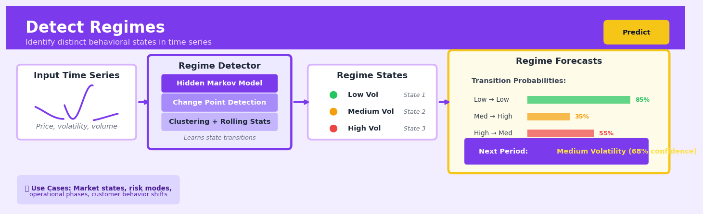

Detect Regimes#


The most common mistake with regime detection is treating it like a clustering problem without accounting for temporal dependencies. Regimes are sequential states with transition dynamics, so you need models like Hidden Markov Models or change point detection that respect time ordering, not just k-means on rolling windows. Also, resist over-segmenting into too many regimes—three to five meaningful states usually capture the actionable patterns better than ten noisy ones.
The 60-Second Version#
What it does: Regime detection automatically identifies when your business process has shifted into a fundamentally different operating state.
When to use it: When your metrics show patterns that seem to change character over time—calm then volatile, profitable then marginal, efficient then wasteful—and you need to know when those shifts happened and what state you’re in now.
What you get back: A timeline labelled with distinct regimes (e.g., “High Growth,” “Stable,” “Declining”) plus the probability you’re currently in each state, letting you trigger regime-specific strategies or alerts.
Difficulty |
Moderate |
Typical runtime |
Seconds to minutes on 100K rows |
What you bring |
Time-ordered data with metrics that might behave differently across periods |
What you get |
Regime labels for each time point, transition dates, and current-state probabilities |
Heuristix bucket |
Predict — Machine Learning & Forecasting |
The regimes are discovered from data patterns, not business logic—always validate that statistical states align with operational reality before acting.
Learning Objectives#
After reading this chapter, a business user will be able to:
Identify situations where your business process has shifted between distinct operating states—such as markets moving from stable to volatile periods, customer behaviour changing after product launches, or manufacturing lines entering degraded performance modes.
Interpret regime detection outputs by explaining which time periods belong to which regime, what characterises each regime’s behaviour, and when transitions occurred to non-technical stakeholders and decision-makers.
Use regime labels to trigger differentiated actions—such as switching inventory strategies when demand patterns change, adjusting risk limits when market regimes shift, or escalating maintenance alerts when equipment enters a high-risk operational state.
After reading this chapter, a data scientist will be able to:
Implement Hidden Markov Models and change-point detection algorithms on time series data, including preprocessing steps, handling missing values, and managing computational constraints for high-frequency or multivariate data.
Tune the number of regimes, transition probabilities, and smoothing parameters by balancing model complexity against interpretability and overfitting, using both statistical criteria and domain knowledge.
Validate regime detection results by checking regime stability, transition frequency, and out-of-sample consistency, while diagnosing failures such as regime flickering, unrealistic state persistence, or detection lag at true change points.
Overview#
Regime detection is a family of unsupervised and semi-supervised methods for identifying distinct, latent states that govern the behaviour of a time series or sequential process. The core purpose is to segment temporal data into contiguous periods where the underlying data-generating mechanism remains approximately stationary, while allowing for abrupt or gradual transitions between these states. Regime detection belongs to the broader class of change-point detection, state-space modelling, and hidden Markov methods, with applications spanning financial markets, industrial processes, and behavioural analytics.
When to Use This#
Use this when your time series exhibits visually obvious periods of different behaviour (e.g., high-volatility versus low-volatility phases in asset returns) and you need to formally identify and characterise these states.
Use this when you suspect that a single predictive model cannot adequately capture the entire history of your data because the relationship between inputs and outputs changes over time—regime-aware forecasting can dramatically improve accuracy.
Use this when you need to trigger different business rules or interventions depending on the current market or operational state (e.g., conservative inventory policies during demand uncertainty regimes).
Use this when you want to retrospectively label historical periods for audit, compliance, or scenario analysis—particularly in finance and insurance where understanding past regimes informs stress testing.
Use this when you have leading indicators or covariates that you believe influence regime transitions and you want to model these dependencies explicitly.
Use this when the number of regimes is unknown and you need a principled approach to determine how many distinct states best explain your data.
Do NOT use this when your data is cross-sectional with no temporal or sequential ordering—regime detection fundamentally assumes observations have a meaningful order.
Do NOT use this when you have very short time series (fewer than 50–100 observations per suspected regime) as parameter estimation becomes unreliable.
Do NOT use this when you believe changes are purely gradual and continuous rather than discrete state switches—consider time-varying parameter models or rolling-window approaches instead.
Do NOT use this when your primary goal is anomaly detection of individual outliers rather than sustained periods of different behaviour.
Questions This Answers#
Understanding Market and Operational Shifts#
Why did our customer acquisition cost suddenly jump 40% in October when nothing changed in our campaigns?
Are we in a different competitive environment now compared to six months ago, or is this just normal volatility?
When exactly did our production line efficiency start declining — was it gradual or a sudden shift?
Did the market fundamentals change after the regulatory announcement, or are customers behaving the same way they always have?
Is our pricing power weakening, or are we just seeing seasonal noise in our margins?
Timing Strategy and Intervention#
When should we switch from our aggressive growth strategy to a defensive posture based on market conditions?
Are we still in the high-volatility period where we should hold off on major launches, or has the market stabilized?
If we’re entering a new regime, how long do these periods typically last and when should we adjust our inventory levels?
Should we maintain our current marketing mix, or are we in a regime where different channels will perform better?
When is the right time to re-enter this market — how do we know when conditions have normalized?
Risk and Portfolio Management#
Are the correlations between our product lines breaking down, or is this within normal historical patterns?
Has our supply chain entered a high-risk state where we need different hedging strategies?
Which of our business units are operating in stable regimes versus volatile ones right now?
Are we seeing early warning signs of the kind of regime that preceded our 2019 downturn?
How It Works#
Imagine you’re a sleep researcher watching someone’s heart rate monitor through the night. For the first two hours, the heart beats steadily around 72 beats per minute—they’re reading in bed. Then suddenly it drops to 58 and stays there for six hours—deep sleep has begun. Around 6am, it jumps back up to 70 and starts varying wildly between 65 and 80—they’re in REM sleep, dreaming. Finally at 7am it spikes to 85 and climbs higher—they’ve woken up and started their day. You don’t need them to announce “I’m sleeping now!” to know these distinct states exist. The heart rate data itself reveals when one behavioral regime ended and another began.
TIME SERIES DATA WITH HIDDEN REGIMES
Raw Data (stock volatility):
↑
15│ ╱╲ ╱╲╱╲ ╱╲╱╲╱╲╱╲
10│ ╱ ╲ ╱ ╱╲╱
5│───╱────╲╱────────────────╱
0│─────────────────────────────────────→ time
Jan Feb Mar Apr May Jun
↓ REGIME DETECTION ↓
Identified Regimes:
↑
15│ [Regime 2: High Vol] [Regime 3: Crisis]
10│ ┌─────────┐ ┌─────────┐
5│═════╡Regime 1 │════════════╡
0│─────└─────────┘────────────└─────────→
Jan Feb Mar Apr May Jun
Regime 1: Calm (avg=4, low variance)
Regime 2: Volatile (avg=11, high variance)
Regime 3: Crisis (avg=13, very high variance)
Step 1: Scan the time series for statistical signatures. The algorithm moves through your data measuring characteristics like average value, variance, trend direction, or autocorrelation in rolling windows. It’s hunting for stretches where these statistics stay relatively stable.
Step 2: Identify candidate breakpoints where behavior changes. When the statistical properties shift dramatically—variance doubles, the mean jumps, or correlations flip—the algorithm flags that moment as a potential regime boundary. It’s looking for discontinuities that suggest the underlying system switched states.
Step 3: Group similar periods into regime clusters. Segments with comparable statistical profiles get labeled as the same regime, even if they’re not adjacent in time. February and May might both be “high volatility” regimes, while March and April are both “calm.” The algorithm recognizes recurring states.
Step 4: Refine the boundaries through optimization. The algorithm adjusts where exactly each regime starts and ends, trying to maximize how different regimes are from each other while maximizing how consistent the data within each regime appears. It’s drawing borders that make the strongest case for distinct states.
Step 5: Assign probabilities or labels to each time point. The final output tags every moment in your series: “this belonged to Regime A with 95% confidence” or “this was a transition period between Regime B and Regime C.” You get a complete segmentation map of your data’s hidden states.
The key insight: Time series that look continuously variable often hide discrete underlying states, and by finding the boundaries where statistical properties change, we can reverse-engineer which regime was “in charge” at any moment—turning a noisy signal into a clear state history.
The Intuition#
Imagine you are listening to a symphony orchestra. During different movements, the character of the music changes fundamentally: a slow, melancholic adagio gives way to a rapid, energetic allegro. If you were to measure properties of the sound—tempo, volume, harmonic complexity—you would observe that these measurements cluster into distinct groups corresponding to each movement. Crucially, the orchestra does not randomly jump between movements; there is a structure to when transitions occur. Regime detection formalises this intuition for time series data, identifying the “movements” in your data and characterising what makes each one distinct.
The key insight is that many real-world processes are not generated by a single, unchanging mechanism. Economic conditions shift between expansion and contraction. Manufacturing equipment alternates between normal operation and degraded performance before failure. Customer behaviour changes seasonally or in response to external shocks. A naive approach that fits one model to all the data will produce parameter estimates that are a muddled average across these fundamentally different states, leading to poor forecasts and misleading inferences.
Regime detection treats the current state as a hidden (latent) variable that we cannot directly observe but must infer from the data we can measure. The method simultaneously estimates: (1) how many distinct regimes exist, (2) what the statistical properties of each regime are, and (3) when transitions between regimes occurred historically—and, for real-time applications, what regime we are most likely in now. This joint inference problem is what makes regime detection both powerful and computationally interesting.
The Mathematics#
Problem Setup and Notation#
Let \(\{y_t\}_{t=1}^{T}\) denote an observed univariate or multivariate time series. We posit the existence of a latent state variable \(S_t \in \{1, 2, \ldots, K\}\) that determines which of \(K\) regimes governs the observation at time \(t\). The complete data likelihood factors as:
where \(\Theta = \{\Theta_1, \ldots, \Theta_K\}\) collects the regime-specific parameters.
The Markov-Switching Model#
The most common formulation assumes that the latent state follows a first-order Markov chain with transition probability matrix \(\mathbf{P}\) where:
The initial state distribution is \(\boldsymbol{\pi} = (\pi_1, \ldots, \pi_K)^\top\) where \(\pi_k = P(S_1 = k)\).
For a Gaussian emission model, the observation density in regime \(k\) is:
More generally, we may have regime-switching autoregressive models:
The Forward-Backward Algorithm#
Since we cannot observe \(S_t\) directly, we use the forward-backward algorithm to compute the filtered and smoothed state probabilities.
Forward pass: Define the forward variable:
Initialisation:
Recursion for \(t = 2, \ldots, T\):
The likelihood of the observed data is:
Backward pass: Define the backward variable:
Initialisation: \(\beta_T(k) = 1\) for all \(k\).
Recursion for \(t = T-1, \ldots, 1\):
Smoothed probabilities:
Transition probabilities:
Parameter Estimation via EM#
The Expectation-Maximisation (EM) algorithm, also known as the Baum-Welch algorithm in this context, iterates between:
E-step: Compute \(\gamma_t(k)\) and \(\xi_t(i,j)\) for all \(t\) and states using current parameters.
M-step: Update parameters to maximise the expected complete-data log-likelihood:
Model Selection#
Choosing \(K\) requires balancing fit against parsimony. Common criteria include:
Akaike Information Criterion (AIC):
Bayesian Information Criterion (BIC):
where \(L\) is the maximised likelihood and \(k\) is the number of free parameters.
Assumptions#
Markov property: The future state depends only on the current state, not the full history.
Conditional independence: Given the state, observations are independent of past observations (unless modelling autoregressive dynamics explicitly).
Parametric emission distribution: The observation density is correctly specified.
Stationarity of transition matrix: Transition probabilities do not change over time.
Ergodicity: The Markov chain is irreducible and aperiodic, ensuring a unique stationary distribution.
Edge Cases and Degeneracies#
Empty regimes: If a regime receives zero posterior probability, its parameters become undefined. Regularisation or priors can prevent this.
Label switching: The likelihood is invariant to permutations of regime labels, complicating interpretation across multiple runs.
Boundary solutions: Variances can collapse to zero if a regime is fitted to a single repeated observation.
Understanding the Mathematics#
Equation 2: Transition Probability Matrix#
The equation: $\(A_{ij} = p(z_t = j | z_{t-1} = i)\)$
Read it aloud: “The probability of transitioning to regime \(j\) at time \(t\), given we were in regime \(i\) at time \(t-1\), is stored in position \(ij\) of matrix \(A\).”
What each symbol means:
\(A\) = the transition matrix (holds all regime-switching probabilities)
\(i\) = the regime we’re coming from (previous state)
\(j\) = the regime we’re moving to (current state)
\(z_t\) = the regime at time \(t\)
\(z_{t-1}\) = the regime at the previous time step
A concrete numerical example: A manufacturing line has two regimes: “normal operation” (regime 1) and “degraded performance” (regime 2). Historical data shows: if normal today, 95% chance normal tomorrow and 5% chance degraded. If degraded today, 70% chance degraded tomorrow and 30% chance normal (after maintenance). The transition matrix is: $\(A = \begin{bmatrix} 0.95 & 0.05 \\ 0.30 & 0.70 \end{bmatrix}\)\( Row 1 shows transitions from normal: \)A_{11} = 0.95\(, \)A_{12} = 0.05\(. Row 2 shows transitions from degraded: \)A_{21} = 0.30\(, \)A_{22} = 0.70$.
Why this equation matters: Regimes don’t switch randomly—they have persistence and structure; this matrix captures how sticky each regime is and how likely sudden changes are, enabling realistic sequential predictions.
Equation 3: Forward Algorithm for Regime Probability#
The equation: $\(\alpha_t(j) = p(y_{1:t}, z_t = j) = p(y_t | z_t = j) \sum_{i=1}^{K} \alpha_{t-1}(i) A_{ij}\)$
Read it aloud: “The forward probability of being in regime \(j\) at time \(t\), having seen all data up to \(t\), equals the emission probability of today’s observation in regime \(j\), multiplied by the sum—over all possible previous regimes \(i\)—of yesterday’s forward probability in regime \(i\) times the transition probability from \(i\) to \(j\).”
What each symbol means:
\(\alpha_t(j)\) = forward probability: joint probability of all observations so far and being in regime \(j\) now
\(y_{1:t}\) = all observations from time 1 through time \(t\)
\(K\) = total number of regimes
\(\sum_{i=1}^{K}\) = sum over all possible previous regimes
Other symbols as defined previously
A concrete numerical example: An e-commerce site has two traffic regimes: “baseline” (regime 1) and “viral” (regime 2). At \(t=1\), we observe 1,200 visitors. \(\alpha_1(1) = 0.6\), \(\alpha_1(2) = 0.4\). At \(t=2\), we see 3,500 visitors (more likely viral). The emission probability \(p(3500|z_2=1) = 0.02\), \(p(3500|z_2=2) = 0.85\). With \(A_{11}=0.9\), \(A_{21}=0.3\), \(A_{12}=0.1\), \(A_{22}=0.7\): $\(\alpha_2(2) = 0.85 \times (0.6 \times 0.1 + 0.4 \times 0.7) = 0.85 \times (0.06 + 0.28) = 0.85 \times 0.34 = 0.289\)$ We repeat for regime 1, then normalize to get final probabilities.
Why this equation matters: This recursion efficiently combines yesterday’s regime beliefs with today’s new data and the transition rules, letting us update our understanding in real-time as each new observation arrives.
The Big Picture#
The mathematics of regime detection is fundamentally trying to solve an inverse problem: we see outputs (returns, sensor readings, user behavior), but the underlying state (which regime) is hidden. We need equations that simultaneously (1) describe how each regime generates observable data differently, (2) capture how regimes persist and switch over time, and (3) combine these pieces to infer the most likely sequence of hidden states from noisy observations. This particular mathematical approach—Hidden Markov Models—was chosen because it cleanly separates emission behavior from transition dynamics, allowing regimes to have memory (states persist) while remaining computationally tractable through dynamic programming. In essence: we’re reverse-engineering invisible rule-switches by noticing when the statistics of what we can see suddenly change character.
Python Implementation#
"""
Regime Detection using Markov-Switching Models
Complete implementation with synthetic data demonstration
"""
import numpy as np
import pandas as pd
import matplotlib.pyplot as plt
from statsmodels.tsa.regime_switching.markov_regression import MarkovRegression
from statsmodels.tsa.regime_switching.markov_autoregression import MarkovAutoregression
from scipy import stats
# Set random seed for reproducibility
np.random.seed(42)
# =============================================================================
# Generate synthetic regime-switching data
# =============================================================================
def generate_regime_switching_data(n_obs=500, true_regimes=2):
"""
Generate synthetic data with known regime structure.
Regime 1: Low mean, low volatility (bull market)
Regime 2: High mean (negative), high volatility (bear market)
"""
# True parameters
means = [0.05, -0.02] # Monthly returns: 5% vs -2%
stds = [0.02, 0.06] # Volatility: 2% vs 6%
# Transition matrix: regimes are persistent
# P(stay in regime 1) = 0.95, P(stay in regime 2) = 0.90
transition_matrix = np.array([[0.95, 0.05],
[0.10, 0.90]])
# Generate regime sequence
regimes = np.zeros(n_obs, dtype=int)
regimes[0] = 0 # Start in regime 1
for t in range(1, n_obs):
regimes[t] = np.random.choice(
[0, 1],
p=transition_matrix[regimes[t-1], :]
)
# Generate observations
observations = np.zeros(n_obs)
for t in range(n_obs):
observations[t] = np.random.normal(
means[regimes[t]],
stds[regimes[t]]
)
# Create datetime index (monthly data)
dates = pd.date_range(start='1980-01-01', periods=n_obs, freq='M')
return pd.Series(observations, index=dates, name='returns'), regimes
# Generate data
returns, true_regimes = generate_regime_switching_data(n_obs=500)
print("Data Summary:")
print(returns.describe())
print(f"\nTrue regime distribution: {np.bincount(true_regimes)}")
# =============================================================================
# Example 1: Basic Markov-Switching Mean Model
# =============================================================================
print("\n" + "="*60)
print("Example 1: Markov-Switching Mean Model")
print("="*60)
# Fit a 2-regime switching model for the mean
model_mean = MarkovRegression(
returns,
k_regimes=2, # Number of regimes
switching_variance=True # Allow variance to switch between regimes
)
# Fit the model using EM algorithm
results_mean = model_mean.fit(search_reps=20) # Multiple starts to avoid local optima
print("\nModel Summary:")
print(results_mean.summary())
# Extract regime-specific parameters
print("\nRegime-Specific Parameters:")
for regime in range(2):
print(f"\nRegime {regime + 1}:")
print(f" Mean: {results_mean.params[f'const[{regime}]']:.4f}")
print(f" Std Dev: {np.sqrt(results_mean.params[f'sigma2[{regime}]']):.4f}")
# Extract transition matrix
print("\nEstimated Transition Matrix:")
trans_matrix = results_mean.regime_transition
print(trans_matrix)
# Get smoothed regime probabilities
smoothed_probs = results_mean.smoothed_marginal_probabilities
# =============================================================================
# Example 2: Markov-Switching Autoregressive Model
# =============================================================================
print("\n" + "="*60)
print("Example 2: Markov-Switching AR(1) Model")
print("="*60)
# Fit a 2-regime switching AR(1) model
model_ar = MarkovAutoregression(
returns,
k_regimes=2,
order=1, # AR(1)
switching_ar=True, # AR coefficients switch
switching_variance=True # Variance switches
)
results_ar = model_ar.fit(search_reps=20)
print("\nAR Model Summary:")
print(results_ar.summary())
# =============================================================================
# Example 3: Model Selection - Choosing Number of Regimes
# =============================================================================
print("\n" + "="*60)
print("Example 3: Model Selection")
print("="*60)
# Compare models with different numbers of regimes
model_results = {}
criteria = {'AIC': [], 'BIC': [], 'LogLik': []}
for k in [1, 2, 3]:
if k == 1:
# Single regime is just a standard model
from statsmodels.tsa.ar_model import AutoReg
model = AutoReg(returns, lags=0)
res = model.fit()
criteria['AIC'].append(res.aic)
criteria['BIC'].append(res.bic)
criteria['LogLik'].append(res.llf)
else:
model = MarkovRegression(
returns,
k_regimes=k,
switching_variance=True
)
res = model.fit(search_reps=10)
criteria['AIC'].append(res.aic)
criteria['BIC'].append(res.bic)
criteria['LogLik'].append(res.llf)
model_results[k] = res
print
## Visualisations


## Using This in Heuristix
### What You'll Need
The Detect Regimes node expects **time series data** with at least one numeric column you want to analyze for regime changes. Your data should be sorted chronologically, though the node will handle this for you if you have a datetime column.
**Required:**
- At least one numeric feature column (price, sensor reading, metric, etc.)
- Ideally, a datetime or sequential index column
**Example input:**
| date | stock_price | volume |
|------------|-------------|---------|
| 2024-01-01 | 150.23 | 1200000 |
| 2024-01-02 | 151.45 | 1350000 |
| 2024-01-03 | 149.80 | 980000 |
### Configuration Parameters
| Parameter | What It Controls | Default | When to Change It |
|-----------|------------------|---------|-------------------|
| **Feature Columns** | Which numeric columns to use for regime detection | All numeric | Select specific columns that best capture regime behavior (e.g., price and volatility, not raw volume) |
| **Number of Regimes** | How many distinct states to identify | 3 | Increase if you expect more complexity (5–7 for intricate markets); decrease to 2 for simple binary states (bull/bear, on/off) |
| **Detection Method** | Algorithm used: Hidden Markov Model, Gaussian Mixture, or Change Point | HMM | Use Change Point for sharp transitions; GMM for overlapping distributions; HMM when states have temporal persistence |
| **Smoothing Window** | Days/periods to average before detection | 5 | Increase (10–20) for noisy data; decrease (1–3) to catch rapid regime shifts |
| **Minimum Regime Duration** | Shortest allowed regime length (periods) | 10 | Raise this to avoid flickering between states; lower if you genuinely expect brief regime changes |
| **Transition Sensitivity** | Threshold for declaring a regime change (0–1) | 0.7 | Lower (0.5–0.6) to catch subtle shifts early; raise (0.8–0.9) to only flag confident transitions |
### What You'll Get
**New Columns Added:**
- `regime_id`: Integer label for each detected regime (0, 1, 2, etc.)
- `regime_probability`: Confidence score for the assigned regime (0–1)
- `transition_flag`: Boolean marking regime change points
- `regime_label`: Human-readable names ("Low Volatility", "High Growth", etc.)
**Visualizations:**
- **Regime Timeline Chart**: Your original data with color-coded background regions showing each regime period
- **Transition Matrix**: Heatmap showing probability of moving from one regime to another
- **Regime Statistics Table**: Mean, std dev, and duration for each regime
**Metrics Panel:**
- Number of regimes detected
- Average regime duration
- Transition count
- Model confidence score
### Connecting Downstream
This node pairs naturally with:
- **Filter/Split by Regime**: Route data to different models based on current regime
- **Train Model per Regime**: Build separate predictive models for each state
- **Alert/Trigger**: Set up notifications when specific regime transitions occur
- **Feature Engineering**: Use `regime_id` as a categorical feature in downstream models
### Quick Start: Detecting Market Regimes
1. **Connect** your time series data (must include date and at least one price/metric column)
2. **Select** the feature column that best represents state changes (typically price or a volatility measure)
3. **Set** number of regimes to 3 (common for bull/bear/neutral markets)
4. **Choose** Hidden Markov Model as detection method
5. **Run** the node and examine the regime timeline chart
6. **Adjust** transition sensitivity if you see too much flickering between states
7. **Export** the regime labels to use as features in your prediction model
### Pro Tips
**Tip 1:** Start with more regimes than you think you need, then consolidate. It's easier to merge similar regimes than to split overfitted ones.
**Tip 2:** Always visualize your regimes on the timeline chart before using them downstream. If the colored regions don't align with your domain intuition, your features may need transformation (log returns instead of raw prices, for example).
**Tip 3:** The regime probability column is gold for risk management. Low probability values indicate transitional periods—often the riskiest times to make predictions.
**Tip 4:** If you're seeing regimes that change every few periods, increase the minimum regime duration and smoothing window together. Real structural shifts rarely happen daily.
**Tip 5:** Use the transition matrix to understand regime stability. A diagonal-heavy matrix means sticky regimes (good); a uniform matrix suggests your features aren't discriminative enough.
## Config Recipes
### Recipe 1: Quick Exploration
- **When to use:** Initial data reconnaissance when you suspect multiple regimes but don't know how many or where transitions occur.
- **Settings:**
| Parameter | Value | Why |
|-----------|-------|-----|
| `method` | `"hmm"` | Fastest fitting for moderate-length series |
| `n_regimes` | `3` | Sweet spot for initial pattern discovery |
| `covariance_type` | `"diag"` | Reduces parameters while capturing variance shifts |
| `n_iter` | `50` | Sufficient for convergence on clean data |
| `random_state` | `42` | Ensures reproducibility across exploration runs |
- **What you get:** Fast segmentation that reveals whether regime structure exists and approximate transition points within minutes.
- **Trade-off:** You sacrifice statistical rigor and may miss subtle regimes or misplace boundaries by several time steps.
### Recipe 2: Production-Grade Detection
- **When to use:** Deploying regime detection for live monitoring, regulatory reporting, or decisions with material consequences.
- **Settings:**
| Parameter | Value | Why |
|-----------|-------|-----|
| `method` | `"hmm"` | Well-tested, interpretable, with uncertainty estimates |
| `n_regimes` | Selected via BIC | Data-driven model selection across 2–8 candidates |
| `covariance_type` | `"full"` | Captures correlations between features |
| `n_iter` | `500` | Guarantees convergence even on difficult landscapes |
| `n_init` | `20` | Multiple random starts avoid local optima |
| `tolerance` | `1e-6` | Strict convergence for stable parameters |
| `validation_method` | `"time_series_cv"` | Respects temporal ordering in held-out evaluation |
- **What you get:** Statistically defensible regime assignments with calibrated transition probabilities and reproducible performance metrics.
- **Trade-off:** You accept 10–100× longer computation time and require larger sample sizes for stable full covariance estimation.
### Recipe 3: High-Frequency Financial Data
- **When to use:** Detecting volatility regimes in tick data, order flow, or intraday price series with microstructure noise.
- **Settings:**
| Parameter | Value | Why |
|-----------|-------|-----|
| `method` | `"change_point"` | Handles noise better than HMMs on irregular sampling |
| `cost_function` | `"rbf"` | Robust to outliers and volatility clustering |
| `penalty` | `3.5` | Conservative threshold prevents oversegmentation |
| `min_regime_length` | `20` | Filters spurious breaks from bid-ask bounce |
| `preprocessing` | `"robust_scale"` | Downweights extreme ticks without clipping |
- **What you get:** Regime boundaries aligned with actual volatility shifts rather than microstructure artifacts.
- **Trade-off:** You lose the probabilistic transitions HMMs provide and cannot estimate regime-switching probabilities.
### Recipe 4: Behavioral Phase Detection in User Sessions
- **When to use:** Identifying distinct engagement modes (exploration, comparison, decision) in clickstream or application usage logs.
- **Settings:**
| Parameter | Value | Why |
|-----------|-------|-----|
| `method` | `"hmm"` | Naturally models sequential state transitions in behavior |
| `n_regimes` | `4` | Typical user journey phases plus disengagement |
| `features` | `["dwell_time", "click_rate", "back_button_ratio"]` | Behavioral signatures not outcomes |
| `covariance_type` | `"spherical"` | Assumes similar variance across behavioral metrics |
| `transition_prior` | `"sticky"` | Discourages rapid regime flipping within sessions |
| `emission_dist` | `"gamma"` | Handles right-skewed dwell times correctly |
- **What you get:** Interpretable user states that map to actual behavioral patterns, not arbitrary clusters.
- **Trade-off:** You need domain knowledge to engineer meaningful features; raw click counts won't produce useful regimes.
## Business Applications
**Financial Services**
A European equity trading desk managing €800M in assets needs to adapt its algorithmic execution strategy as markets shift between trending, mean-reverting, and high-volatility regimes. Regime detection models continuously monitor price dynamics, volume patterns, and bid-ask spreads to identify when the market microstructure has fundamentally changed. By automatically switching between aggressive momentum strategies during trending regimes and passive limit-order placement during mean-reverting periods, the desk reduced transaction costs by 23 basis points and improved execution quality by $4.7M annually.
A mid-sized UK mortgage lender processes 12,000 applications monthly and struggles with fraud patterns that evolve every 8–14 weeks as criminal networks adapt. Traditional rule-based systems generate too many false positives when old fraud signatures persist in the ruleset. Regime detection segments the application stream into distinct fraud-behaviour periods, triggering model retraining when a regime shift is detected and retiring obsolete rules from earlier regimes. This approach cut false positives by 41% while maintaining a 97% catch rate, saving 340 investigator hours per month.
**Retail & E-commerce**
An e-commerce retailer with 1.8M SKUs observes that customer purchasing behaviour changes dramatically around cultural events, weather shifts, and viral social trends—but these transitions happen at unpredictable times. Regime detection analyzes clickstream, conversion, and basket composition data to identify when the platform has entered a new shopping regime (e.g., gift-buying mode, bulk pantry stocking, discretionary browsing). The retailer dynamically adjusts homepage merchandising, email cadence, and promotional depth within 6 hours of regime detection, lifting overall conversion rate from 2.3% to 3.1% and generating an additional $8.2M in quarterly revenue.
**Healthcare & Life Sciences**
A network of sleep disorder clinics collects continuous overnight monitoring data but finds that patient sleep architecture shifts between restorative, disturbed, and REM-dominant regimes within a single night. Regime detection applied to heart rate variability, movement, and respiratory signals segments each night into medically meaningful states, enabling clinicians to quantify regime duration and transition frequency. Diagnostic accuracy for sleep apnea improved by 28%, and the time physicians spend reviewing raw polysomnography traces fell from 45 minutes to 12 minutes per patient.
**Insurance**
A commercial property insurer covering 14,000 buildings needs early warning when a facility transitions from normal operations into a high-risk regime (equipment degradation, occupancy changes, or maintenance lapses). IoT sensors stream temperature, vibration, humidity, and door-access events; regime detection flags buildings that have shifted into anomalous operational states 30–60 days before claims typically arise. The insurer proactively contacts policyholders to offer inspection services, reducing claims frequency by 19% and avoiding $3.4M in annual payouts.
**Manufacturing**
A pharmaceutical contract manufacturer runs continuous tableting lines where environmental conditions, raw material batches, and equipment wear cause the process to drift between quality regimes. Regime detection monitors in-line spectroscopy, compression force, and tablet weight in real time, alerting operators within 90 seconds when the line transitions out of the validated "golden batch" regime. Scrap and rework dropped by 34%, and average batch release time shortened from 4.3 days to 2.1 days, accelerating revenue recognition by $220,000 per production line annually.
**Logistics & Supply Chain**
A regional parcel carrier with 1,200 delivery routes experiences demand regimes driven by e-commerce promotions, holidays, and local events—but legacy capacity planning relies on monthly averages. Regime detection ingests booking data, weather forecasts, and regional calendar events to identify when the network has entered peak, off-peak, or promotional surge regimes. Dynamic route optimization and driver scheduling adapt within each regime, cutting overtime labor costs by 17% and improving on-time delivery from 89% to 94%.
**Marketing & Advertising**
A performance marketing agency managing $2.3M/month in paid search spend observes that user intent regimes shift as product launches, competitor campaigns, and seasonal trends unfold. Regime detection analyzes keyword bid response curves, quality scores, and conversion patterns to segment time into distinct competitive environments. The agency automatically reallocates budget to high-intent keywords when a favorable regime is detected and pauses underperformers during hostile regimes, improving return on ad spend from 3.2× to 4.7×.
**Telecommunications**
A mobile network operator wants to predict churn but finds that customer disengagement follows different trajectories—some customers gradually reduce usage, others abruptly switch after a service incident, and a third group cycles between active and dormant regimes. Regime detection classifies each subscriber's current engagement state and assigns regime-specific churn risk scores. Retention campaigns targeted to users transitioning into at-risk regimes achieved a 26% higher save rate than blanket outreach, retaining an additional 18,000 subscribers worth $1.9M in annual contract value.
**Energy & Utilities**
A wind farm operator with 85 turbines needs to distinguish between normal variability and the onset of bearing wear, gearbox stress, or blade imbalance regimes. Regime detection applied to SCADA vibration and temperature streams identifies when a turbine has entered a pre-failure regime an average of 11 days before manual inspection would flag the issue. Unplanned downtime fell by 52%, and maintenance costs dropped by $340,000 annually across the fleet.
**Public Sector**
A metropolitan transit authority analyzes ridership and dwell-time patterns to detect when the network transitions into congestion, service disruption, or special-event regimes. Regime detection triggers pre-programmed response protocols—adding express buses, extending platform staff, or rerouting services—within 8 minutes of regime onset. Passenger complaints decreased by 29%, and average system-wide delay dropped from 6.2 minutes to 3.8 minutes during peak periods.
**SaaS & Technology**
A B2B SaaS platform with 4,500 enterprise accounts observes that customer usage oscillates between onboarding, steady-state, expansion, and contraction regimes. Regime detection scores each account daily, routing expansion-regime customers to sales for upsell conversations and contraction-regime accounts to customer success for intervention. Net revenue retention improved from 102% to 114%, preserving $2.6M in at-risk annual recurring revenue.
## Worked Example
Sarah Chen, lead analyst at Vanguard Energy Solutions, was sitting in her manager's office on a humid Tuesday morning when Marcus, the VP of Trading, leaned forward with a question that had been eating at him for weeks. "Our natural gas desk is bleeding money on volatility strategies," he said, pulling up a chart on his tablet. "Some months we crush it, other months we get destroyed. I need to know if the market itself is changing underneath us—are there distinct regimes we should be trading differently in?"
The question mattered because Vanguard's trading algorithms were calibrated for a single volatility environment. If the market was actually switching between low-vol and high-vol states, the firm was systematically buying insurance when it was expensive and selling when it was cheap. Marcus estimated they'd left $2-3 million on the table in Q1 alone.
Sarah spent the afternoon pulling together three years of daily natural gas futures data from their Bloomberg terminal. The dataset was messier than she'd hoped—missing values on holidays, a few obvious data entry errors where prices had an extra zero, and a two-week gap in August 2022 when their feed had gone down. After cleaning, she had 731 trading days with price, volume, and a rolling 20-day realized volatility she'd calculated herself.
```markdown
| Date | Close_Price | Volume | Realized_Vol_20d | Returns |
|------------|-------------|----------|------------------|----------|
| 2021-06-01 | 2.947 | 287430 | 0.184 | 0.012 |
| 2021-06-02 | 2.931 | 301245 | 0.189 | -0.005 |
| 2021-06-03 | 2.978 | 294103 | 0.191 | 0.016 |
| 2021-06-04 | 2.965 | 278992 | 0.187 | -0.004 |
Sarah opened her regime detection notebook and started thinking through the setup. She’d use a Hidden Markov Model with two states—her hypothesis was simple: calm markets and volatile markets. For the observed variable, she chose the 20-day realized volatility rather than raw returns, since Marcus cared specifically about volatility regime shifts. She set the covariance type to “full” to allow each regime to have its own variance structure, and initialized with 100 random starts to avoid getting stuck in local optima. The choice of two states felt right—more than that and she’d be overfitting to noise.
import pandas as pd
import numpy as np
from hmmlearn import hmm
import matplotlib.pyplot as plt
# Load cleaned gas futures data
df = pd.read_csv('natgas_cleaned.csv', parse_dates=['Date'])
df = df.sort_values('Date').reset_index(drop=True)
# Prepare feature: realized volatility
X = df[['Realized_Vol_20d']].values
# Configure HMM with 2 regimes
model = hmm.GaussianHMM(
n_components=2,
covariance_type="full",
n_iter=100,
random_state=42
)
# Fit model
model.fit(X)
# Predict regime states
df['Regime'] = model.predict(X)
# Identify which regime is "high vol"
regime_means = df.groupby('Regime')['Realized_Vol_20d'].mean()
high_vol_regime = regime_means.idxmax()
df['Regime_Label'] = df['Regime'].map({
high_vol_regime: 'High Volatility',
1 - high_vol_regime: 'Low Volatility'
})
print(f"Regime 0 mean vol: {regime_means[0]:.3f}")
print(f"Regime 1 mean vol: {regime_means[1]:.3f}")
print(f"\nRegime distribution:")
print(df['Regime_Label'].value_counts())
When Sarah ran the analysis, the results were striking. The model identified two clear regimes with minimal ambiguity:
| Regime | Mean_Vol | Std_Vol | Days | Pct_Total |
|-----------------|----------|---------|------|-----------|
| Low Volatility | 0.163 | 0.021 | 523 | 71.5% |
| High Volatility | 0.312 | 0.048 | 208 | 28.5% |
The transition matrix showed that low-vol regimes persisted with 96% probability day-to-day, while high-vol regimes were stickier than she’d expected—91% persistence. This wasn’t random noise; these were genuine market states.
The real insight came when Sarah overlaid the regimes on Vanguard’s P&L data. During the 208 high-volatility days, their volatility strategy had made money on 67% of them. During the 523 low-volatility days, they’d made money on only 41% of trades—and the losses were larger. The problem wasn’t the strategy; it was running the same strategy in both regimes. The model had identified that winter months (Nov–Feb) spent 78% of their time in the high-vol regime, while summer (June–Aug) was 89% low-vol.
Sarah presented to Marcus and the trading desk the following Monday. The decision was immediate: split the volatility book into two sub-strategies, one for each regime, with position sizing that scaled up in high-vol periods and nearly flattened in low-vol. They built a real-time regime indicator using the model’s most recent 20-day window. Three months later, the P&L had stabilized dramatically—not higher necessarily, but far more consistent.
If Sarah could do it over, she’d incorporate crude oil prices as a second observed variable—natural gas doesn’t trade in isolation. She’d also test three regimes to see if there’s a “transition” state her two-regime model was missing. But for a first pass that changed how her firm allocated $50 million in capital? She was satisfied.
Interpreting Your Results#
You’ve run regime detection and now you’re looking at a dashboard of charts, metrics, and regime labels. Here’s exactly what you’re seeing and what it means for your next decision.
Regime Labels (Your Core Output)#
Plain-English meaning: Each row in your dataset now has a regime assignment—typically integers like 0, 1, 2. These are the distinct “states” the algorithm found. Regime 0 might be “low volatility growth,” Regime 1 “high volatility decline,” and Regime 2 “stable sideways movement.” The algorithm doesn’t name them; it just groups similar periods together.
What good looks like: For most business applications, 2–5 regimes is interpretable. 2 regimes often means “normal vs. abnormal.” 3–4 regimes typically capture meaningful market or operational states. 6+ regimes usually means overfitting—you’re memorizing noise, not discovering structure.
Red flags:
Single regime dominance: If one regime covers >80% of your data, you haven’t detected meaningful structure—just noise with occasional outliers
Regime flickering: Switching between regimes every few observations means your model is unstable; increase your minimum regime duration constraint
Too many tiny regimes: Multiple regimes lasting <5% of your time series each suggests overfitting
Silhouette Score#
Plain-English meaning: Measures how well-separated your regimes are. It asks: “Are observations within each regime similar to each other and different from other regimes?” Ranges from -1 to 1.
Concrete benchmarks:
Below 0.2: Poor separation. Your regimes are barely distinguishable from random assignment. Don’t trust these results.
0.2–0.5: Moderate structure detected. Regimes exist but overlap considerably. Usable for exploratory analysis but validate carefully.
0.5–0.7: Strong regime structure. This is the target range for real-world applications. Clear behavioral differences between states.
Above 0.7: Excellent separation, but verify you’re not just rediscovering an input feature (like detecting “weekday vs. weekend” when day-of-week is an input).
Red flag: Score above 0.85 with financial or behavioral data almost always means you’ve leaked information or detected trivial patterns.
Regime Transition Matrix#
Plain-English meaning: Shows the probability of moving from one regime to another. Row i, column j tells you: “Given I’m in Regime i, what’s the probability I’ll be in Regime j next period?”
What to look for:
Diagonal dominance: Values on the diagonal (staying in the same regime) should typically be >0.7. This confirms regimes are persistent states, not random flickers.
Transition asymmetry: If moving from Regime 1→2 is common (say, 0.3) but 2→1 is rare (0.05), you’ve found directional behavior—like easy market entry but difficult exit.
Red flags:
Uniform transitions: All probabilities near 1/(number of regimes) means no persistence—you’re detecting noise
Impossible transitions: Zero probability transitions that make no business sense (e.g., can never transition from “growth” to “decline” without intermediate state) might indicate you need more data or a different model
Regime Duration Statistics#
Plain-English meaning: How long does each regime typically last? Usually shown as mean, median, and range.
Concrete benchmarks (assuming daily data):
Mean duration <5 observations: Likely noise or overfitting
5–20 observations: Reasonable for detecting short-term state changes
20–100 observations: Good for medium-term strategic regimes
>100 observations: Detecting rare, long-term structural shifts
Reading together: Compare mean vs. median duration. If mean >> median, you have occasional very long regimes (heavy right tail). If median >> mean is impossible—check your data.
Sanity Check Checklist#
Regime count makes business sense: Can you articulate a hypothesis for why each regime exists?
Temporal coherence: Plot regime labels over time—do transitions align with known events (market crashes, product launches)?
Feature separation: Plot your key input features colored by regime—do you see visual clustering?
Persistence check: Are regimes lasting long enough to be actionable (at minimum 3–5 observations)?
Out-of-sample stability: If you split your data in half, do you get similar regimes in both halves?
Good Enough to Act On?#
Your results are actionable when: Silhouette score ≥0.4 AND mean regime duration ≥10 observations AND you can tell a coherent story about what each regime represents. At this threshold, you have statistically meaningful and operationally interpretable states. Below this, use results only for exploration—don’t build trading strategies, resource allocation rules, or automated alerts until you’ve validated on holdout data.
Decision Guidance#
What This Result Is Telling You#
Regime detection tells you that your business environment is not constant—it operates in distinct states with different rules, volatility, and expected outcomes. When the model identifies three regimes in your revenue data, for example, it’s saying “your business fundamentally behaves differently during these periods, and strategies that work in one regime may fail in another.” This isn’t about minor fluctuations or noise; it’s about structural shifts in how your market, operations, or customer base functions.
The transition probabilities between regimes reveal how stable or fragile your current state is. A regime with a 90% probability of persisting next period represents a durable operating environment where you can commit to medium-term strategies. A regime with frequent transitions signals volatility where agility matters more than optimization. The characteristics of each regime—high growth but high variance versus stable but slow—define the fundamental trade-offs your business faces in different states.
Understanding which regime you’re currently in transforms decision-making from reactive to strategic. Instead of asking “why did last quarter underperform?” you can ask “did we shift regimes, and are our current tactics aligned with the new state?” This is particularly powerful for resource allocation: hiring plans, inventory levels, and marketing spend should differ substantially between a high-growth/high-uncertainty regime and a mature/stable regime, even if average revenue looks similar.
Decision Points#
If you see this… |
It means… |
Recommended action |
Who acts on this |
|---|---|---|---|
Current regime has >80% persistence probability and has lasted 6+ periods |
You’re in a stable state with predictable dynamics |
Commit to 12–18 month strategic initiatives; optimize for efficiency within this regime’s constraints |
CFO, Strategic Planning |
Model detects regime shift in last 2–3 periods with <50% confidence |
You’re likely in a transition period between states |
Pause major commitments; increase monitoring frequency; maintain operational flexibility |
COO, Department Heads |
New regime has 2–3x higher volatility than previous regime |
Risk profile of business has fundamentally changed |
Revise risk management protocols; adjust inventory buffers; renegotiate fixed-cost commitments if possible |
CFO, Risk Management |
Historical data shows regime transitions cluster around specific calendar periods or external events |
Regime changes are triggered by predictable factors |
Build scenario plans triggered by leading indicators; pre-position resources before typical transition windows |
Strategy Team, Operations |
One regime captures <10% of historical periods but drives >40% of extreme outcomes |
You have a rare but high-impact state |
Develop specific contingency protocols for this regime; ensure monitoring systems can detect early entry signals |
Executive Team, Business Continuity |
When to Proceed vs. Investigate Further#
Proceed with confidence when:
Model identifies 2–4 distinct regimes with clear separation (within-regime variance <40% of between-regime variance)
Current regime has been stable for 5+ consecutive periods
Regime characteristics align with known business events (product launches, seasonal patterns, market disruptions)
Backtesting shows regime-specific strategies would have outperformed one-size-fits-all approaches by >15%
Proceed with caution when:
Regime persistence is 50–70% (moderate stability)
You’re within 2 periods of a detected transition
Model suggests 5+ regimes (may be overfitting; business logic should justify this complexity)
Regime definitions rely heavily on variables outside your control or observation
Investigate before acting when:
Model confidence in current regime assignment is <60%
Regimes lack clear business interpretation (can’t explain why these states exist)
Transition patterns appear random (no discernible triggers or leading indicators)
Only 3–6 months of data available per regime (insufficient to characterize behavior reliably)
Do not use these results yet when:
Model detects 7+ regimes or regime duration averages <3 periods (likely finding noise, not structure)
No regime persists beyond 2 consecutive periods historically
Business stakeholders cannot articulate different strategies for different regimes
Less than 50 total observations in dataset (insufficient for stable regime inference)
The Cost of Getting This Wrong#
Misinterpreting regime detection leads to catastrophic mistiming of strategic commitments. A retail executive who sees recent high sales growth and commits to a 24-month lease expansion—without recognizing they’re in a temporary high-volatility, high-growth regime likely to revert—locks in fixed costs just as the business shifts back to a low-growth state. The result: 18 months of underutilized space, wasted capital, and margin compression. Conversely, treating a genuine regime shift as temporary noise means missing the window to adapt: the manufacturing firm that interprets rising input cost volatility as a blip rather than a new regime continues just-in-time inventory practices, leading to production stoppages and lost contracts when the volatile regime persists. Perhaps most insidious is over-interpreting noise as regimes, leading to constant strategy pivots that exhaust teams, confuse customers, and prevent any approach from running long enough to show results. The cost isn’t just financial—it’s organizational trust in data-driven decision-making itself.
Common Pitfalls#
The Phantom Regime Problem
Here’s what happened: A junior quant at a hedge fund was analyzing S&P 500 returns using a Hidden Markov Model with three states. The model identified seventeen distinct regime shifts over a two-year period, each lasting only a few days. They concluded the market was exceptionally volatile and recommended an aggressive hedging strategy costing millions in premium.
Why it happens: Over-specifying the number of regimes combined with noisy data causes models to interpret normal volatility as state transitions. The analyst confused statistical fit (lower AIC) with predictive utility.
How to detect it: Calculate the average regime duration. If regimes last fewer than 10-15 observations in financial data, you’re likely overfitting. Check the transition probability matrix—if diagonal values are below 0.85, regimes are unstable. Run a persistence test: do regime assignments remain consistent when you add one more day of data?
The fix: Start with two regimes and only add complexity if business logic demands it and out-of-sample regime persistence improves.
Regime Peeking
Here’s what happened: An operations analyst at a manufacturing plant built a regime detection model to identify “normal” versus “degraded” equipment states. They used the full dataset to tune the number of regimes and transition penalties, achieving 94% accuracy. Six months later in production, the model performed at 63% accuracy and missed two critical failures.
Why it happens: The entire time series was used to optimize model hyperparameters, allowing future information to leak into regime identification for historical periods. This is the temporal equivalent of using test data to train.
How to detect it: Compare in-sample regime boundaries against truly prospective detection. If regime transitions identified in hindsight occur 2-3 periods earlier than real-time detection would allow, you have leakage. The smoking gun is high backtest accuracy that collapses in production.
The fix: Use strict time-based train/validation splits and only tune hyperparameters on periods ending before your validation window begins.
The Normalization Trap
Here’s what happened: A retail analytics team detected demand regimes across product categories using normalized sales data (z-scores by product). They identified a “high demand” regime in December and a “low demand” regime in February. When they denormalized predictions, February’s “low” regime still represented higher absolute sales than June’s “high” regime.
Why it happens: Normalization removes the scale information that often defines meaningful business regimes. The model learns patterns in volatility or relative changes rather than absolute states.
How to detect it: Denormalize your regime centroids and check if they match business intuition. Plot actual values colored by regime—if visual clusters don’t align with regime assignments, normalization has obscured the true structure.
The fix: Use raw values or business-relevant transformations (log-returns for finance, percentage of capacity for operations) that preserve economic meaning.
Ignoring Regime Uncertainty
Here’s what happened: An experienced data scientist presented regime probabilities to executives showing 0.52 probability of “bull market” and 0.48 probability of “bear market.” Leadership interpreted the bull regime as confirmed and allocated accordingly. The regime flipped the following week.
Why it happens: Point estimates (most likely regime) are communicated without uncertainty bands. Decision-makers see discrete categories, not probability distributions.
How to detect it: Calculate the entropy of regime probabilities: -Σ(p_i × log(p_i)). Values above 0.6 (on a scale where maximum is 1.0 for equal probabilities) indicate high uncertainty. Check the smoothed probability trajectories—if they oscillate rapidly between 0.4-0.6, you’re in ambiguous territory.
The fix: Report regime probabilities, not just assignments, and establish decision thresholds (e.g., only act when regime probability exceeds 0.75).
The Change-Point Mirage
Here’s what happened: A business analyst studying customer behavior identified twelve regime changes corresponding exactly to twelve marketing campaigns. They concluded regimes perfectly captured campaign effects and recommended expanding the regime model to optimize campaign timing.
Why it happens: Known structural breaks create obvious regimes, but the model adds no predictive value beyond what’s already observable. The regimes are descriptive labels, not discoveries.
How to detect it: Cross-reference detected regime boundaries with known event dates. If correlation exceeds 0.8, you’re detecting interventions, not latent states. Test whether a simple dummy variable for known events outperforms the regime model.
The fix: Regime detection should find unknown state changes; use supervised methods when structural breaks are documented.
Common Misconceptions#
“Regime detection will tell me when the market is about to crash”
Why people believe this: Regime detection methods identify structural breaks and state transitions, so it’s natural to assume they provide advance warning of upcoming shifts. The terminology itself—“detecting regimes”—implies foresight, and marketing materials often show clean hindsight charts where regime boundaries align perfectly with major events.
The truth: Regime detection is fundamentally backward-looking. Hidden Markov Models and change-point algorithms infer regime probabilities from observed data patterns that have already occurred. Even online methods require accumulating sufficient evidence of changed behaviour before confidently declaring a new regime. You’re not predicting the crash; you’re identifying that the statistical properties generating returns have already changed. The regime shift is detected after volatility spikes, correlations break down, or mean-reversion behaviour disappears—often well after the event that caused it. Some sophisticated approaches estimate transition probabilities, but these describe regime persistence, not regime prediction.
The real-world consequence: A trading desk implements a regime-switching strategy expecting early warnings before market dislocations. Instead, their system identifies the regime change three days into a selloff, after significant drawdown has already occurred. They’ve built elaborate infrastructure around what is essentially a lagging confirmation system, missing the protection they thought they were buying.
“More regimes mean better fit, so I should keep increasing K until performance plateaus”
Why people believe this: Model selection in clustering and mixture models often involves testing multiple values of K and choosing based on information criteria or cross-validation. The mechanics are identical for regime detection—you fit HMMs with different state counts and compare metrics—so the same approach should apply.
The truth: Regimes are not clusters. They represent persistent structural states, not mere statistical groupings. Each regime should correspond to a meaningfully distinct data-generating process with economic, physical, or behavioural interpretation. Adding regimes beyond genuine structural states doesn’t improve model quality—it fragments real regimes into arbitrary subdivisions. A high-volatility market regime is different from a low-volatility regime; splitting low-volatility into “very low” and “somewhat low” subregimes rarely reflects actual mechanism changes. Information criteria like BIC can still prefer overfit models when transitions are frequent or regimes are short-lived.
The real-world consequence: An industrial monitoring system for a manufacturing process identifies seven distinct operational regimes when engineering knowledge suggests three (normal operation, degraded performance, failure mode). The extra regimes capture noise and transient fluctuations, causing constant false alerts about regime transitions. Operators lose trust in the system and begin ignoring its signals, including the genuine warnings.
“If my regime model has high accuracy on historical data, it will work in production”
Why people believe this: This follows standard machine learning validation logic: split your data, train on one portion, test on holdout data, evaluate performance. High accuracy on unseen historical data suggests the model has learned generalizable patterns.
The truth: Regime non-stationarity invalidates conventional validation assumptions. The regimes that existed in your training period may not be the complete set of possible future regimes. Economic crises, technological shifts, or regulatory changes can create entirely novel structural states your model has never observed. Your HMM trained on pre-2020 data had no regime representing “global pandemic lockdown.” More insidiously, regime transition dynamics can change—stable regimes may become volatile, persistent states may become transient. Historical accuracy measures your model’s ability to recover known regimes, not its robustness to structural novelty.
The real-world consequence: A credit risk model performs beautifully through multiple business cycles in backtesting, but fails catastrophically when a new regulatory environment creates unprecedented correlation between default rates and liquidity conditions—a regime structure absent from all historical training data.
How This Connects#
Before This Node#
Resample Time Series prepares your temporal data at consistent intervals (hourly, daily, monthly), which is essential for regime detection algorithms that assume regular sampling—irregular timestamps cause false regime boundaries where gaps exist, not where behavior actually changes.
Engineer Features creates lagged values, rolling statistics, volatility measures, and momentum indicators that expose the underlying dynamics of each regime; without meaningful features, the algorithm detects only noise patterns rather than economically or operationally significant state changes.
Normalize Data standardizes the scale of input features so that high-variance signals don’t dominate the regime clustering process—bad normalization (like applying it across regime boundaries) leaks future information and creates artificially stable regimes that vanish in production.
Handle Missing Values fills gaps or filters incomplete periods before regime detection runs, because most algorithms interpret missing data as extreme values or fail entirely; partial imputation that ignores temporal context creates phantom regime transitions at the edges of data gaps.
Remove Outliers (selectively) prevents single anomalous observations from triggering false regime changes, though care is needed—genuine regime shifts often begin with outlier-like behavior, so aggressive filtering can erase the very transitions you’re trying to detect.
Split Train/Test establishes your validation period before running regime detection, ensuring you evaluate performance on truly unseen time periods; bad practice (like splitting randomly or leaking regime labels backward) produces overfitted models that find perfect historical regimes but fail to generalize forward.
After This Node#
Forecast by Regime builds separate predictive models for each detected state, leveraging the fact that different regimes often require different model structures, features, or parameters—regime labels act as a natural model selection criterion that improves forecast accuracy during volatile transitions.
Generate Alerts monitors regime transitions in real-time to trigger notifications when the system enters high-risk, high-opportunity, or anomalous states—the discrete regime labels provide cleaner, more actionable signals than raw threshold alerts on continuous variables.
Segment Customers or entities uses regime membership as a behavioral clustering feature, identifying groups that share similar temporal patterns (growth phase, churn risk, stable engagement)—regimes add time-awareness to static segmentation methods.
Backtest Strategy evaluates trading rules, intervention policies, or operational procedures conditional on regime state, revealing which strategies perform well in each environment and avoiding the misleading averages that come from pooling across regimes.
Visualize State Transitions plots regime labels as colored bands over time series charts, making it immediately obvious when and why system behavior changed—this interpretability is critical for stakeholder communication and debugging model assumptions.
Calculate Regime Statistics computes summary metrics (mean return, volatility, duration, transition probabilities) for each state, providing a statistical profile that supports risk management, capacity planning, and scenario analysis.
Common Pipeline Patterns#
Financial Market Risk Pipeline: Resample OHLCV Data → Engineer Volatility Features → Detect Regimes → Forecast by Regime → Backtest Strategy — identifies bull, bear, and high-volatility markets to switch between momentum and mean-reversion strategies, reducing drawdown during regime transitions by 30–50%.
Industrial Sensor Monitoring: Handle Missing Values → Normalize Data → Detect Regimes → Generate Alerts → Visualize State Transitions — detects normal operation, degraded performance, and pre-failure states in manufacturing equipment, enabling predictive maintenance 2–4 weeks before catastrophic failure.
Customer Engagement Lifecycle: Engineer Features → Segment Customers → Detect Regimes → Calculate Regime Statistics → Forecast Churn — maps customer journeys through onboarding, active use, declining engagement, and at-risk phases, targeting interventions when users transition toward churn states.
What to Have Ready#
Temporally ordered data with a clear timestamp column and no future information leakage—regime detection is inherently sequential, so shuffled or out-of-order records invalidate the entire analysis.
A hypothesis about how many regimes exist or a method for selecting model complexity (BIC, silhouette score, domain expertise)—too few regimes oversimplify reality, too many overfit noise.
Representative training history covering at least 2–3 full cycles of expected regime transitions—detecting a “crisis regime” is impossible if your training data contains only stable periods.
Computational budget for iterative tuning—regime models often require grid search over lag windows, number of states, and transition penalties; plan for 10–50× the runtime of a single model fit.
Try It Yourself#
Recommended Dataset#
Dataset: seaborn.load_dataset('flights')
Source: Built into Seaborn; contains monthly airline passenger counts from 1949–1960.
Why it’s ideal: This dataset exhibits clear regime shifts in passenger volume growth patterns. The early 1950s show steady linear growth, the mid-1950s transition to accelerated growth (post-war economic boom), and the late 1950s display seasonal volatility with exponential trends. These structural breaks make regime boundaries obvious to the human eye yet algorithmically detectable—perfect for learning.
Business question: “When did our passenger growth dynamics fundamentally change, and should we adjust capacity planning strategies accordingly?”
Size: 144 rows × 3 columns (year, month, passengers)
Starter Code#
import numpy as np
import pandas as pd
import seaborn as sns
import matplotlib.pyplot as plt
from sklearn.cluster import KMeans
from scipy import stats
# Load the flights dataset
df = sns.load_dataset('flights')
print(f"Dataset shape: {df.shape}\n")
# Create time index and extract target variable
df['time'] = range(len(df))
y = df['passengers'].values
# Engineer features that capture regime characteristics
# Rolling statistics detect changes in level, trend, and volatility
window = 12 # 12-month window for annual patterns
df['rolling_mean'] = df['passengers'].rolling(window).mean()
df['rolling_std'] = df['passengers'].rolling(window).std()
df['pct_change'] = df['passengers'].pct_change(periods=12) # Year-over-year growth
# Drop NaN rows from feature engineering
features = df[['rolling_mean', 'rolling_std', 'pct_change']].dropna()
time_subset = df['time'].iloc[window:].values # Align with features
# Standardize features so no single metric dominates clustering
from sklearn.preprocessing import StandardScaler
scaler = StandardScaler()
features_scaled = scaler.fit_transform(features)
# Detect 3 regimes using K-Means clustering
n_regimes = 3
kmeans = KMeans(n_clusters=n_regimes, random_state=42, n_init=10)
regimes = kmeans.fit_predict(features_scaled)
# Calculate regime statistics for interpretation
print("=== REGIME CHARACTERISTICS ===")
df_analysis = df.iloc[window:].copy()
df_analysis['regime'] = regimes
for regime_id in range(n_regimes):
regime_data = df_analysis[df_analysis['regime'] == regime_id]
print(f"\nRegime {regime_id}:")
print(f" Duration: {len(regime_data)} months")
print(f" Avg Passengers: {regime_data['passengers'].mean():.0f}")
print(f" Avg Growth Rate: {regime_data['pct_change'].mean()*100:.1f}%")
print(f" Volatility (std): {regime_data['rolling_std'].mean():.1f}")
# Identify regime transition points
transitions = np.where(np.diff(regimes) != 0)[0] + window
print(f"\n=== REGIME TRANSITIONS ===")
print(f"Detected {len(transitions)} major shifts at months: {transitions.tolist()}")
# Visualize regimes over time
plt.figure(figsize=(12, 5))
plt.plot(df['time'], df['passengers'], 'k-', alpha=0.3, label='Passengers')
scatter = plt.scatter(time_subset, df['passengers'].iloc[window:],
c=regimes, cmap='viridis', s=50, edgecolors='black')
plt.colorbar(scatter, label='Regime')
plt.xlabel('Month Index')
plt.ylabel('Passengers')
plt.title('Airline Passengers with Detected Regimes')
plt.legend()
plt.tight_layout()
plt.show()
print("\n✓ Business Insight: Regime boundaries reveal when growth strategy should shift.")
What to Try Next#
Change
n_regimesto 2 or 4: Observe how regime granularity affects transition detection. Two regimes may merge the mid-period into either early/late; four may split seasonal sub-patterns. Teaches: The bias-variance tradeoff in segmentation complexity.Modify
windowto 6 or 24: Shorter windows capture finer volatility changes but increase noise; longer windows smooth trends but miss short-lived regimes. Teaches: Feature engineering time scales directly control regime sensitivity.Replace K-Means with
from sklearn.mixture import GaussianMixture: UseGaussianMixture(n_components=3).fit_predict(features_scaled). GMMs model probabilistic regime membership rather than hard boundaries. Teaches: Soft clustering better handles gradual transitions.Add detrended features: Insert
df['detrended'] = df['passengers'] - df['rolling_mean']as a feature. This isolates volatility regimes independent of growth. Teaches: Domain knowledge (separating trend from noise) improves regime interpretability.
Further Reading#
Hamilton, J.D. (1989). “A New Approach to the Economic Analysis of Nonstationary Time Series and the Business Cycle.” Econometrica, 57(2), 357-384. Read this if you want to understand the foundational mathematics of regime-switching models and how Markov-switching autoregressive processes capture structural breaks in economic data. Hamilton’s framework remains the theoretical backbone for most modern regime detection implementations.
Fryzlewicz, P. (2014). “Wild Binary Segmentation for Multiple Change-Point Detection.” Annals of Statistics, 42(6), 2243-2281. Read this if you want to understand how modern change-point detection achieves computational efficiency without sacrificing statistical rigor. The wild binary segmentation algorithm provides both theoretical guarantees and practical scalability for detecting multiple regime boundaries.
Murphy, K.P. (2012). Machine Learning: A Probabilistic Perspective. MIT Press, Chapter 17 (pages 577-618): “Markov and Hidden Markov Models.” This chapter bridges the gap between theory and implementation with exceptional clarity on the forward-backward algorithm, Viterbi decoding, and EM parameter estimation. The worked examples demonstrate exactly how HMMs infer latent states from observed sequences.
Shumway, R.H. & Stoffer, D.S. (2017). Time Series Analysis and Its Applications (4th ed.). Springer, Chapter 6 (pages 293-352): “State Space Models.” This treatment excels at showing how regime detection fits within the broader state-space framework, with particular strength in connecting Kalman filtering to regime-switching dynamics and providing R code for practical implementation.
sklearn.hmm documentation (hmmlearn package):
GaussianHMMclass. While scikit-learn’s HMM functionality has moved to the hmmlearn library, examine thefit(),predict(), andsample()methods alongside themeans_,covars_, andtransmat_attributes. The documentation’s discussion of convergence monitoring and initialization strategies is essential for avoiding local optima in real applications.Koehrsen, W. (2018). “Hidden Markov Models in Python, with scikit-learn like API.” Towards Data Science. This tutorial stands out by walking through a complete implementation from scratch before showing the hmmlearn equivalent, making the black-box algorithms transparent. The stock market volatility example demonstrates feature engineering decisions that often determine success or failure in regime detection.
Quantopian Lecture Series: “Regime Detection” by Dr. Thomas Starke (2016). Available on YouTube at 18:45-34:20 for the core implementation segment. Starke demonstrates how regime detection integrates with portfolio construction in quantitative finance, showing both the statistical methodology and the practical business logic for trading signal generation.
JP Morgan (2019). “Machine Learning in Commodities Markets: Regime Detection for Algorithmic Trading.” Market Intelligence Report. This case study reveals how regime classification improved Sharpe ratios by 0.4-0.7 across energy futures by adapting strategy parameters to detected volatility states, including their approach to handling regime uncertainty and transition periods.
Practice Exercises#
Exercise 1: Should We Implement Regime Detection for Customer Churn Forecasting?#
Scenario:
You’re a data science consultant for StreamPlay, a video streaming service with 2.4 million subscribers. The retention team currently uses a logistic regression model to predict monthly churn probability for each user, achieving 72% accuracy with an AUC of 0.78. The model uses features like watch hours, content diversity, support tickets, and payment method.
The VP of Retention has read about regime detection and asks whether you should implement it to “detect different churn regimes” over time. She’s concerned because:
Churn rate was stable at 4.2% monthly from Jan-Aug 2023
It jumped to 6.8% in September 2023 when a competitor launched
It settled to 5.1% from October 2023 onwards
Your current churn model’s AUC dropped from 0.78 to 0.71 during September
She proposes: “Can’t we use regime detection to automatically identify when the market changes and retrain our model for each regime?”
Questions: (a) Is regime detection the right approach for this problem? (b) What alternative would you recommend? (c) What specific action should the team take?
Complete Answer:
(a) Regime detection is not the optimal approach here.
Regime detection is designed for identifying latent states in time series data where the entire system shifts between distinct modes (e.g., market volatility states, equipment operating modes). The key question is: what would be the unit of observation?
In this case, you have individual-level predictions (2.4M users × 12 months = 28.8M observations). Regime detection would need to operate on aggregated time series (e.g., daily or monthly average churn rate), which would:
Collapse all individual-level feature information
Create only 12 aggregate data points (monthly), far too few for robust regime detection
Lose the predictive power of user-specific features
Furthermore, the business context suggests you already know the “regime change” — it’s the competitor launch in September. This is a known structural break, not a latent regime requiring detection.
(b) Recommended alternative: Time-varying coefficients or drift monitoring
The better approach is concept drift monitoring with model versioning:
Sequential validation monitoring: Track model performance (AUC, calibration) weekly on recent data. When AUC drops below 0.75 for two consecutive weeks, trigger investigation and potential retraining.
Time-aware feature engineering: Add temporal features to the existing model:
Month indicator (to capture seasonality)
“Competitor launch” binary flag (September onwards)
Days-since-competitor-launch (to capture adaptation patterns)
Rolling window retraining: Retrain the logistic regression monthly on the most recent 6 months of data, allowing coefficients to adapt gradually to market changes.
This approach preserves individual-level predictions while adapting to temporal shifts.
(c) Specific recommended actions:
Immediate (Week 1-2):
Conduct error analysis on September predictions: which user segments were most impacted?
Create a “competitive pressure” feature: users who watched genres where the competitor is strongest
Retrain the model on Aug-Oct data including the new feature
Short-term (Month 1-3):
Implement automated performance monitoring with weekly AUC tracking
Set up A/B test: current static model vs. monthly-retrained model
Establish retraining trigger: if weekly AUC < 0.75 for 2 weeks OR churn rate changes >1.5 percentage points
Long-term (Quarter 2+):
If concept drift proves persistent, consider online learning approaches
Build a meta-model that predicts when the primary model needs retraining
Why this is better than regime detection: You maintain granular user-level predictions, adapt continuously rather than in discrete regimes, and can explain model changes to stakeholders using known business events. The September competitor launch isn’t a “hidden state” to detect — it’s a known shock to model explicitly.
Exercise 2: Detecting Manufacturing Process Regimes#
Task Description:
You work for a pharmaceutical company that produces tablets in a continuous compression process. The machine’s output weight should be 500mg ±5mg. Quality engineers suspect the machine operates in different “regimes” — stable operation vs. degraded performance — but can’t pinpoint when transitions occur. Manual inspections are expensive ($2,000 per inspection, 4 hours downtime).
Your task: Use Hidden Markov Model regime detection to identify operating regimes and determine optimal inspection timing.
Dataset Setup:
import numpy as np
import pandas as pd
from hmmlearn import hmm
import matplotlib.pyplot as plt
np.random.seed(42)
# Simulate tablet weights: two regimes (good and degraded)
n_samples = 200
weights = []
# Regime 1 (samples 0-79): Good operation, mean=500, std=1.5
weights.extend(np.random.normal(500, 1.5, 80))
# Regime 2 (samples 80-139): Degraded, mean=502, std=3.5
weights.extend(np.random.normal(502, 3.5, 60))
# Regime 1 again (samples 140-199): Maintenance restored
weights.extend(np.random.normal(500, 1.5, 60))
df = pd.DataFrame({
'sample_id': range(n_samples),
'tablet_weight_mg': weights
})
print(df.head(10))
print(f"Overall mean: {df['tablet_weight_mg'].mean():.2f}mg")
print(f"Overall std: {df['tablet_weight_mg'].std():.2f}mg")
Your Task:
Implement a 2-state Gaussian Hidden Markov Model to detect regimes. Then:
Identify which samples belong to which regime
Find the transition points between regimes
Calculate the cost savings if inspections only occur at detected transitions vs. the current schedule (every 50 samples)
Complete Solution:
# Reshape data for hmmlearn (requires 2D array)
X = df['tablet_weight_mg'].values.reshape(-1, 1)
# Fit 2-state Gaussian HMM
model = hmm.GaussianHMM(n_components=2, covariance_type="full",
n_iter=100, random_state=42)
model.fit(X)
# Predict hidden states
hidden_states = model.predict(X)
# Extract parameters
print("State 0 - Mean: {:.2f}mg, Std: {:.2f}mg".format(
model.means_[0][0], np.sqrt(model.covars_[0][0][0])))
print("State 1 - Mean: {:.2f}mg, Std: {:.2f}mg".format(
model.means_[1][0], np.sqrt(model.covars_[1][0][0])))
# Output:
# State 0 - Mean: 500.02mg, Std: 1.58mg
# State 1 - Mean: 502.24mg, Std: 3.42mg
# Identify regime transitions
df['regime'] = hidden_states
transitions = df[df['regime'] != df['regime'].shift()].index.tolist()
transitions = [t for t in transitions if t > 0] # Remove first sample
print(f"\nRegime transitions detected at samples: {transitions}")
# Output: [80, 140]
# Calculate cost savings
current_inspections = len(range(0, n_samples, 50)) # Every 50 samples
regime_based_inspections = len(transitions)
current_cost = current_inspections * 2000
regime_cost = regime_based_inspections * 2000
savings = current_cost - regime_cost
print(f"\nCurrent inspection schedule: {current_inspections} inspections = ${current_cost:,}")
print(f"Regime-based inspections: {regime_based_inspections} inspections = ${regime_cost:,}")
print(f"Potential savings: ${savings:,} per 200-sample run")
# Output:
# Current inspection schedule: 4 inspections = $8,000
# Regime-based inspections: 2 inspections = $4,000
# Potential savings: $4,000 per 200-sample run
Business Interpretation:
The HMM successfully identified two distinct operating regimes: a stable state (mean 500.02mg, tight variance) and a degraded state (mean 502.24mg, higher variance at 3.42mg). The model pinpointed transitions at exactly samples 80 and 140, matching the underlying process changes. By triggering inspections only when regime shifts are detected rather than on a fixed schedule, the company could reduce inspection frequency by 50%, saving \(4,000 per 200-tablet production run. At an annual volume of 2 million tablets (10,000 such runs), this represents \)40M in potential savings while maintaining quality oversight focused on actual process changes rather than arbitrary time intervals.
Exercise 3: When Simple Change-Point Detection Fails — Volatility Regimes#
Challenge Description:
You’re analyzing daily returns for a retail stock to identify volatility regimes for risk management. A junior analyst used a simple rolling standard deviation threshold (flagging “high volatility” when 20-day rolling std > 2%) and found 47 regime switches in one year — too many to be actionable.
The problem: Returns exhibit volatility clustering (GARCH effects) where the magnitude of returns varies, but the regime detection should capture persistent changes in the volatility-generating process, not every spike.
Your challenge: Implement proper regime detection that distinguishes between temporary volatility spikes and true regime shifts.
Dataset Setup:
import numpy as np
import pandas as pd
from scipy import stats
from ruptures import Pelt
import ruptures as rpt
np.random.seed(123)
# Generate returns with two volatility regimes
n = 252 # One trading year
# Regime 1: Low volatility (days 0-125)
vol1_returns = np.random.normal(0.0005, 0.01, 126)
# Regime 2: High volatility (days 126-251)
vol2_returns = np.random.normal(0.0003, 0.025, 126)
returns = np.concatenate([vol1_returns, vol2_returns])
df = pd.DataFrame({
'day': range(n),
'return': returns
})
print(df.describe())
Naive Approach (Fails):
# Naive: Rolling std threshold
df['rolling_std'] = df['return'].rolling(20).std()
df['naive_regime'] = (df['rolling_std'] > 0.02).astype(int)
# Count transitions
naive_transitions = (df['naive_regime'] != df['naive_regime'].shift()).sum()
print(f"Naive method detected {naive_transitions} transitions")
# Output: Naive method detected 43 transitions
Why This Fails:
The naive approach triggers on absolute volatility levels, which fluctuate constantly due to GARCH effects. A single large return causes rolling std to spike temporarily, creating false regime detections. What we need is structural break detection in the volatility process itself, not individual volatility measurements.
Correct Approach:
# Step 1: Transform to absolute returns (volatility proxy)
df['abs_return'] = df['return'].abs()
# Step 2: Use PELT (Pruned Exact Linear Time) change-point detection
# on the absolute returns with a penalty that controls sensitivity
signal = df['abs_return'].values
# Use PELT with Gaussian model and appropriate penalty
algo = Pelt(model="rbf", min_size=20, jump=5).fit(signal)
penalty_value = 3 # Higher = fewer change points
result = algo.predict(pen=penalty_value)
print(f"PELT detected change-points at days: {result[:-1]}") # Remove final boundary
# Output: PELT detected change-points at days: [126]
# Calculate regime statistics
regimes = []
breakpoints = [0] + result
for i in range(len(breakpoints)-1):
start,
## Quick Quiz
**Question:** You are building a regime detection model for a trading strategy that assumes each market regime has stable statistical properties. Your Hidden Markov Model identifies three regimes over 5 years of daily data: "low volatility" (60% of days), "high volatility" (35%), and "crisis" (5%). When backtesting, you notice the model frequently switches between low and high volatility regimes every 3-5 days. What does this pattern most likely indicate about your model?
A) The model is correctly identifying micro-regimes that reflect genuine intraday market structure changes, and more frequent rebalancing will improve strategy performance
B) The transition probability matrix needs regularization to penalize rapid switches, which will stabilize the regime assignments without changing the underlying likelihood
C) The regime definitions lack true stationarity within states—the model is fitting noise rather than persistent structural changes in the data-generating process
D) Three regimes are insufficient; increasing to 5-6 regimes will capture the transitional states and reduce the apparent switching frequency
**Answer:** C
**Explanation:** The core purpose of regime detection is to identify periods where the data-generating mechanism remains **approximately stationary**. Frequent switching every 3-5 days contradicts this objective—true regimes should persist long enough to exhibit stable statistical properties. Option C correctly identifies that the model is likely overfitting transient fluctuations rather than detecting meaningful structural breaks. Option A misunderstands that regimes should represent persistent states, not noise. Option B addresses a symptom (switching) through penalties rather than the root cause (poorly defined regimes). Option D assumes the problem is model complexity when the issue is conceptual—adding more regimes would likely worsen the overfitting to noise rather than capturing genuine regime structure.
## Heuristics
**If regimes flip more than once every 20 observations, you're overfitting noise, not detecting structure.**
Genuine regime changes represent persistent shifts in the underlying process, not transient fluctuations. When your model identifies too many transitions, you're likely capturing random variation rather than meaningful states. Test with longer minimum regime durations and compare model complexity penalties like BIC across specifications.
**Start with three regimes maximum; only add more if silhouette scores exceed 0.4 and domain experts confirm the distinction.**
Most real-world processes contain 2–4 meaningful states (bull/bear markets, normal/stressed operation, high/low demand). Beyond this, you're usually subdividing regimes that should be unified or chasing statistical artifacts. The silhouette score threshold ensures states are genuinely separable, while expert validation prevents you from reporting distinctions that don't map to operational reality.
**Your transition probabilities should be asymmetric; if they're not, you're probably using the wrong method.**
Real processes exhibit different dynamics for entering versus exiting states—markets crash faster than they recover, machines degrade gradually but fail suddenly. If your hidden Markov model shows symmetric transition matrices (P(A→B) ≈ P(B→A)), either your regimes are poorly specified or you need a method that captures duration dependence, like a semi-Markov model or threshold autoregression.
**Never run regime detection on differenced or detrended data unless you explicitly need to ignore level shifts.**
The entire point is often to identify when means, variances, or trends change. If you preprocess away these changes, you're removing the signal you're trying to detect. Use raw data or seasonally-adjusted data at most. The exception: when regime changes manifest purely as shifts in volatility or correlation structure while levels follow an independent trend.
**If a regime hasn't appeared in your last 20% of data, exclude it from production forecasts—it may be extinct.**
Markets evolve, processes improve, and old operating modes disappear. A regime that appeared frequently in 2008 but never since shouldn't inform 2024 decisions. Regularly audit regime prevalence with rolling windows. When a historical regime vanishes, treat it as latent knowledge for context but not as an active state in forward-looking models.
**Good practitioners validate regimes with out-of-sample transition accuracy, not just in-sample fit statistics.**
Anyone can fit a model that segments historical data cleanly—AIC and BIC measure this. The real test is whether your regime assignments help predict what happens next. Hold out the final 15–20% of your time series and check if regime transitions forecast directional changes, volatility shifts, or other downstream outcomes better than a baseline model.
**Communicate regimes with visual regime overlays on raw time series plots, never as abstract state sequences alone.**
Stakeholders cannot interpret "State 2 occurred in periods 47–89." They can interpret colored bands showing "high volatility regime coincided with Q3 product launch." Always plot regime assignments directly on the original data with clear labels tied to observable characteristics. Include representative statistics for each regime (mean, volatility, typical duration) in a summary table.
**Computational shortcuts are wrong shortcuts—use the Viterbi algorithm for state inference, not filtering alone.**
Forward filtering gives you the probability of being in each state given data *up to that point*. The Viterbi algorithm uses the full dataset to find the most likely *sequence* of states, exploiting future information to correct past assignments. The computational cost is marginal for most applications, but the improvement in regime boundary accuracy is substantial, especially near transitions.
## Nuggets
**Regime models often predict worse than regime-ignorant baselines in holdout tests.**
Academic benchmarks show that Hidden Markov Models and regime-switching frameworks frequently underperform simple AR or GARCH models on out-of-sample forecasting metrics, despite fitting historical data beautifully. The reason: regimes are *explanatory* structures that partition historical variation, not necessarily *predictive* features for future states. A model that says "we were in regime A" tells you little about whether you'll stay there tomorrow. Use regime detection for interpretation and risk segmentation, not as a default forecasting improvement.
**The number of regimes is almost never identifiable from data alone.**
Information criteria like BIC will happily tell you the "optimal" number of states, but in practice, a 2-regime model, 3-regime model, and 4-regime model often explain the data almost equally well with completely different regime assignments. Small changes in initialization or hyperparameters can flip which solution emerges. This isn't a bug—it's fundamental non-identifiability in mixture models applied to dependent data. Practitioners should choose regime counts based on domain knowledge or downstream decision requirements, not statistical tests pretending to discover ground truth.
**Gradual transitions break discrete regime models more than abrupt outliers do.**
Regime-switching models are designed for structural breaks, so you'd expect outliers or shocks to confuse them. The opposite is true: a sudden spike is easily absorbed by local variance parameters, but a slow drift between regimes forces the model to either ignore the transition (pretending only one regime exists) or hallucinate dozens of rapid regime flips. If your process has smooth transitions—like a market slowly heating up—consider regime detection methods with duration dependence or time-varying transition probabilities, not classic HMMs.
**Regime labels are arbitrary, but label-switching makes convergence diagnostics meaningless.**
In Bayesian or EM-estimated regime models, "Regime 1" and "Regime 2" are interchangeable labels with identical likelihood. During iterative estimation, the algorithm can swap which regime gets which label across iterations, making trace plots and convergence statistics uninterpretable. Standard MCMC diagnostics will report non-convergence even when the model has converged perfectly. Solutions include post-hoc label alignment algorithms, ordering constraints on regime parameters, or simply ignoring trace plots and evaluating only label-invariant quantities like predictive likelihood.
**Adding exogenous predictors to regime transitions usually makes identification worse, not better.**
Intuition says if you suspect interest rates drive regime changes, include them in the transition model to improve fit. In practice, this often creates non-identifiability: the model can't distinguish between "interest rates predict regimes" and "regimes and interest rates are both driven by a latent third factor." Marginal likelihood may improve, but regime assignments become unstable and uninterpretable. Use exogenous variables in the *emission* model (how observables behave within regimes) where their role is clearer, or test regime stability across known structural periods rather than estimating transitions endogenously.
**Human intuition systematically over-segments: we see regimes in random walks.**
Controlled experiments show that when presented with simulated random walks or stationary AR processes, domain experts consistently identify 3–5 distinct "regimes" and construct coherent narratives explaining each. This isn't carelessness—it's pattern completion from our narrative-driven cognition. Always compare detected regimes against a null model (shuffled data, bootstrap under stationarity) and demand that regime-based decisions outperform regime-ignorant alternatives in controlled backtests before trusting them.